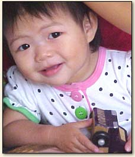
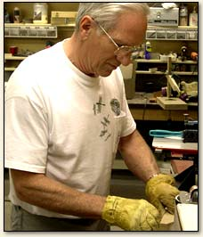

A Little Bit About Us
▼Miracles happen when people willingly serve others. When Charles and Donna Cooley became aware that many children have never had a toy, they formulated their motto, "We may not be able to make a toy for every child in the world that needs one–but we’re going to try!"
The seeds of their service were planted in a small workshop at their home near Cedar City, Utah in 1995. They made a couple hundred toys that were humbly offered to Primary Children’s Medical Center. The toys were received with such enthusiasm and gratitude that the Cooleys made more and donated them locally to the Canyon Creek Women’s Crisis Center, Cedar City Care and Share, the Presbyterian Church, and within the state of Utah to Shriner’s Hospital, Ronald McDonald House and worldwide.
They named their workshop “The Happy Factory” because of the happiness it brings to them and to the children who receive the wooden toys. In the process, they have learned that toys are not simply playthings, but tools that help unlock a child’s ability to think and to cope with the world around them. What started as a hobby has turned into a full time labor of love.
This is a non-profit organization dedicated to bringing joy and happiness to children who have none. We have currently shipped almost 2 million toys around the world!
Since their humble beginnings, The Happy Factory has welcomed volunteers of every age–including juvenile offenders in three state correctional facilities. There are no paid salaries. The Happy Factory is a 501(c)3 non-profit organization. All the materials they use are donated and all of the toys are made by volunteers. Every toy is donated to a child in need. The toys are made of scraps of hardwood donated by a local cabinet maker. Unfortunately, there are a few expenses for wheels and axles, saw blades, building maintenance costs and other miscellaneous items. The Happy Factory workers are toy makers, not fundraisers. It costs approximately fifty cents per toy for wheels and axles. They gratefully accept donations of materials, time, and money.

Why make Toys?
▼One day Charles was talking with a friend, Les Jones, who is the head of the psychology department at Southern Utah University. He asked if a toy made any difference to a child. He didn’t have time to explain the answer right then, but send Charles a printed explanation later. Here are just a couple of paragraphs of what he sent:
“Imagination.”
Children that experience emotional trauma often learn to suppress their pain and fear by turning off their minds. They learn to stop thinking. The common sights and sounds of their world stimulate images of despair. The important elements of their life are beyond their control. They have no power. they learn that they are helpless. They learn to turn off their imagination and escape into a stupor of nothingness. Toys stimulate a sense of power.
When you have a toy you are in control. you have power. The more simple the toy the more power and control you have. Many modern toys are too complex. They occupy our mind instead of stimulating our imagination.
The best toys are toys that represent love – personal toys not community toys. Simple toys that stimulate the imagination. Toys that last a life time and beyond.
Many of these children in orphanages do live in the land of nothing, the poorest of the poor, the lowest level of poverty, many do not even have a name. Food, clothing and medicine is usually not enough to help them escape from this stupor of nothingness. We must also deal with their heads and their hearts, give them a feeling of power and control.
Our toys give them this feeling. It give them a feeling of ownership, pride, love, hope, and self esteem. The toys trigger the imagination and help start the learning process.
During the year 2000, The Happy Factory entered a pilot program with the charities division of the Church of Jesus Christ of Latter Day Saints. We supplied 1800 toys a month that were sent through the humanitarian missionary couples that were serving, mostly in eastern Europe and Africa, where they were finding so many orphanages. On February 20, 2001, Charles and Donna had a meeting in the office of Garry Flake, the director of humanitarian service for the LDS Church. He invited two of the area directors who go all over the world to coordinate humanitarian projects. They told us some very interesting things.
They stated there are over 500 million children living in poverty. 500 million! Half a billion! Many of these children in orphanages have very little clothing. Many are naked. It’s common at meal time to be served out of a common rusty pot, which they reach into with their hands because they have no utensils. Some of the orphanages have a few wooded bunks that the older children sleep on. The younger just sleep on the floor. It is not possible for the human mind to imagine the depths of poverty in which so many of these little children live. They told us you have to be there and see it, smell it, and feel it to believe it.
Through this pilot program we have learned that The Happy Factory toys in most cases are better than the medicine. The children hold a toy, they sleep with it, the love it. It’s like a security blanket. In most cases it’s the first thing the child has ever owned. One of the area managers said he had witnessed the magic of a toy in the hands of a child.
We thank the lord that we have been given the opportunity to give many children that flower for the soul, to help jump start their imagination to give them a feeling of power and control, to let them feel the love of another human hand.

Our Locations:
▼Happy Factory Location
Cedar City, Utah — Headquarters
Doug Carr, Director and General Manager
896 N. 2175 W. Circle
Cedar City, UT 84721
(435) 586-8352